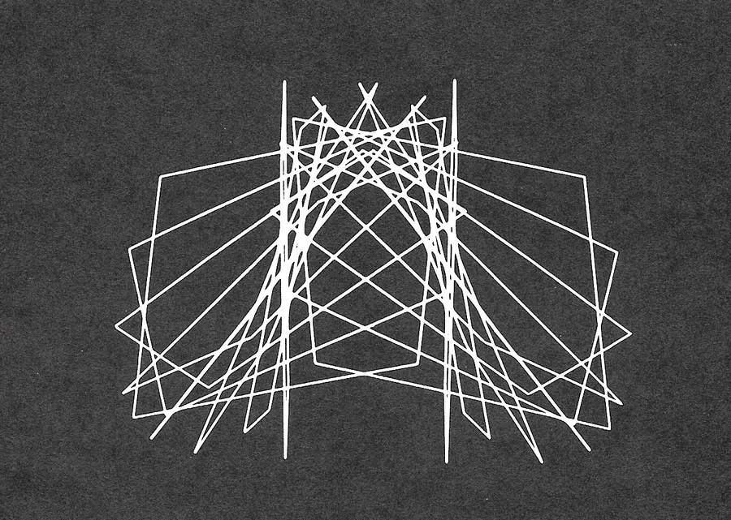

Much of my research surrounding this project involved the process of exploring the history of artists and designers who worked within the realm of visual music. I gathered a large collection of image and text sources using Are.na, acting as a sort of visual research diary. The images featured below showcase concepts and ideas that I found to be helpful and inspiring along my explorative process.
Chladni Figures (1787)
Viking Eggeling - Symphonie Diagonale (1924)
Oskar Fischinger - An Optical Poem (1938)
Oskar Fischinger - An Optical Poem (1938)
Len Lye - Kaleidoscope (1935)
Jordan Belson - Allures (1961)
Jordan Belson - Allures (1961)
